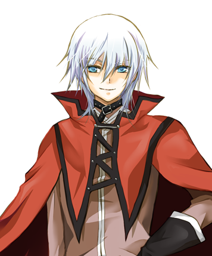
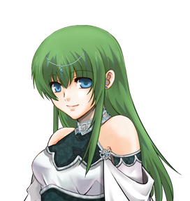
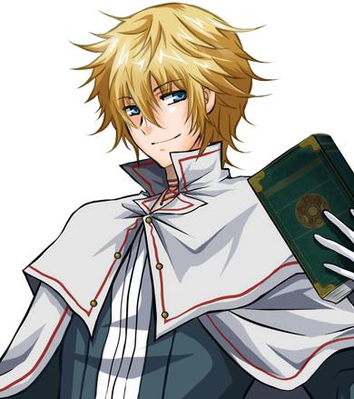
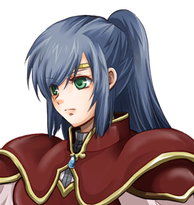
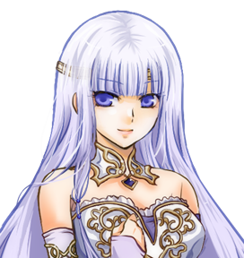
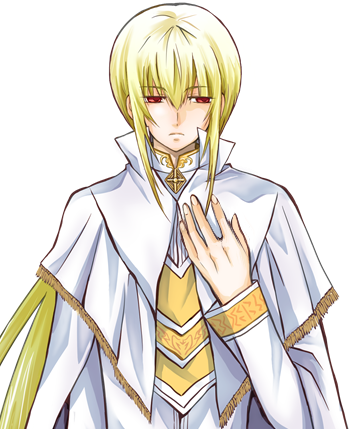
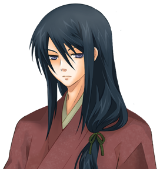
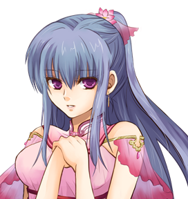

Story
水と緑の織りなす大地イデアル。人々はこの美しき世界で心穏やかに暮らしていた。
しかしある日突然、大陸の中央に位置するユスティージア王国に、天より巨大な塔が堕とされる。
”ケイオス・ピュルゴス”――解き放たれた迷宮より溢れ出す混沌。未知の怪物に蹂躙され、怯え逃げ惑う人々。
塔の主、アナスタシウスは楽園に住まう者どもに告げる。
今こそ総ては還るのだと……。
幸いにして、聖女エステルにより怪物たちは塔の中に封印された。しかしそれもいつまで保つことか。
軍は先の戦で疲弊し、追討のための戦力は残っていない。
苦肉の策として、各地の王は冒険者たちにお触れを出した。
「邪悪を絶ち、安寧と平和を取り戻した勇気ある者には、望むだけの褒美を取らせる」
混沌から秩序を取り戻すため、富と栄誉を手に入れるため、愛する人のため――。
様々な思惑を胸に秘め、今日も数多の冒険者が、死の迷宮に足を踏み入れる。
Character

エディ クラス：シーフ
本作の主人公。両親は既に亡く、ユスティージア城下町のはずれにて妹と二人で暮らしている。
貧しくて学もなかったため、盗みを働いて生計を立てていた。
一生楽に暮らせるほどの財を求め、冒険者として旅立つ。

シェーラ クラス：プリースト
エディの妹。町の教会で癒やしの術を学んでいる。
兄を心から愛し慈しむ一方で、彼が自分のためにと罪を犯していることに胸を痛めている。

ライ クラス：ウィンドキャスター
エディの旧友。天涯孤独の身だが、魔道都市にて風魔法を学ぶ。
若くして才能を開花させ、実力だけで高位魔道士の座に上り詰めた魔道の天才。

ミージュ クラス：ガーディアン
聖女エステルの護衛役。他人の盾となるため重い鎧に身を包んだ、国でも指折りの騎士。
エステルからの命で、新米冒険者たちの指南役を務めている。

エステル クラス：聖女
塔を封印した聖女エステルその人。代償として彼女の身体を構成する魔力の大半を失った。
現在は王宮にて療養しつつ、冒険者たちに助言を与えている。

ホロウ クラス：ダークキャスター
異端とされる闇魔法を操る謎多き青年。常に聖女エステルに寄り添い、彼女の手足として働いている。
塔の怪物と通じているという噂もあるが……。

カアレ クラス：サムライ
怪物の存在を耳にし、はるか東の大陸から訪れた剣客。カタナという独特な片刃の剣を振るう。
金にも名誉にも興味はなく、ただ強さのみを追い求める武人。
シリル クラス：マーチャント
大陸有数の豪商の息子。まだ若いながらも親譲りの商才で世間に広くその名を轟かせている。
数年前、屋敷に入った盗賊に妹の命を奪われて以降、盗賊をひどく憎んでいる。

アム クラス：フラワーキャスター
鬱蒼と茂る森の奥で、密かに育てられた少女。
その身は花の呪いに蝕まれており、触れたものに毒を与え、眠りに誘う。
外の世界を知りたいと願い、森を抜け出した。
ここで紹介したキャラクター以外にも、様々な冒険者が登場！
気に入ったメンバーでパーティを組み、未知なる塔を攻略せよ！